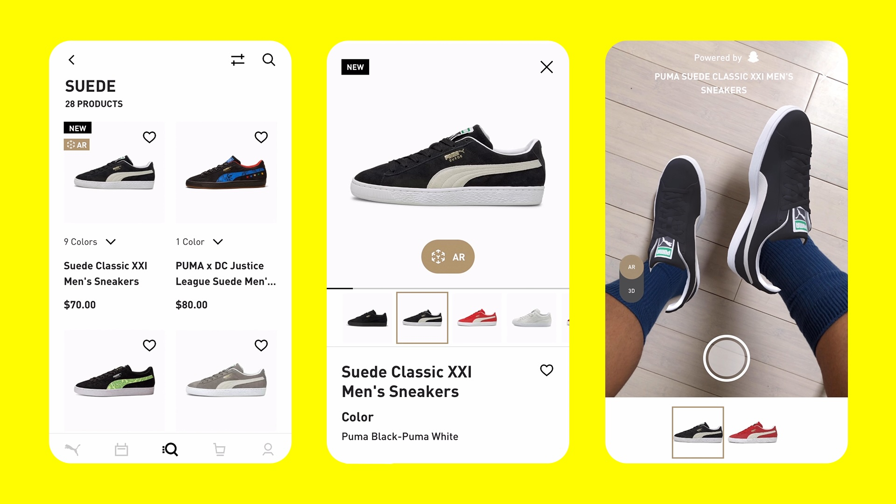
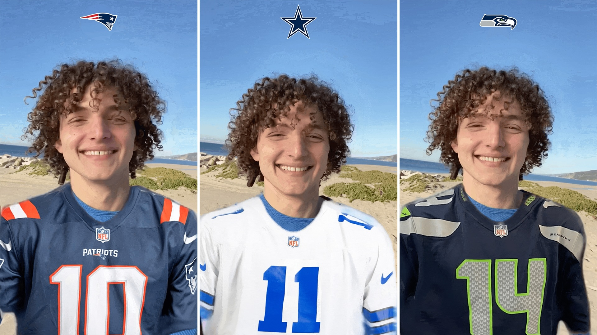
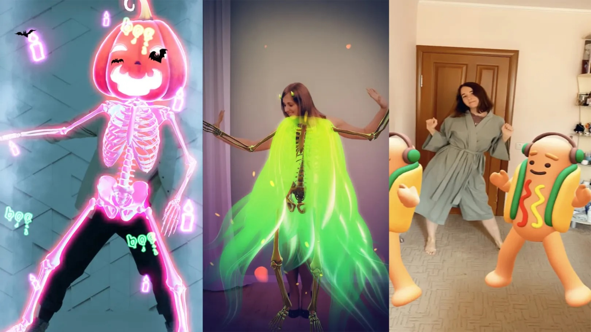
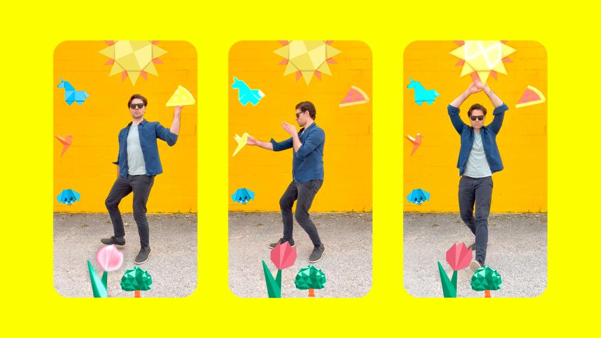
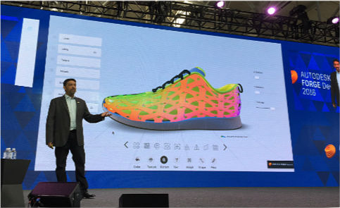
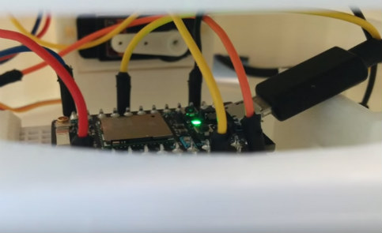
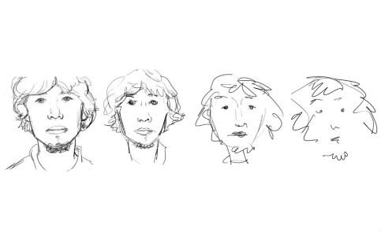

Itamar’s career includes leadership roles in pioneering technology companies. As Sr. Manager in ML / CV Engineering at Snap Inc., he contributed to AR innovations that redefine digital interaction. As co-founder and CEO of RealDrift, he led real-time motion capture breakthroughs, and at Autodesk, he developed advanced tools for 3D design. His industry contributions have significantly impacted entertainment, design, and user experience
Itamar earned his Master’s degree in Computer Science from Reichman university, where he focused on non-photorealistic rendering and AI-driven design. His academic research laid the groundwork for his impactful career, bridging computational theory with real-world applications to redefine the future of technology.
2017-
Augmented Reality / Generative AI at Snap Inc.
-
2016-2017
RealDrift Co-Founder & CEO
-
2015-2017
Group Manager at Autodesk
Lead the product & development of a distruptive modular CAD platform for 3D Printing, IoT, Parametric Design
2013-2015
Sr. Graphics Engineer & Research Team Lead at Autodesk
Developed Augmented Reality 3D graphic engines for mobile, 3D Reconstruction & Computer Vision algorithms
2012
Research Associate at Disney Research
Generate faces drawings
2010-2012
Reichman University: Master’s Degree in Computer Science
Collaborating with Prof. Ariel Shamir on what define a style & abstraction in face drawings
2009-2012
Algorithms Developer at Sears
Large-scale recommender systems, newsfeed optimization, web crawlers, social network analysis
2006-2010
Tel Aviv University: Bachelor’s Degree in Computer Science
Computer Vision, Computer Graphics, Autonomous Cars
Highlights

AR Shopping - Rendering, Tracking and Asset Creation
Leading Snapchat's AR Shopping and AR Try-On ML initiatives, revolutionize the retail experience by integrating augmented reality into the shopping journey. These features enable users to virtually try on clothing, accessories, and beauty products, providing a realistic and interactive preview before purchase. Collaborating with major brands to create seamless and engaging shopping experiences
Snap Inc.

NFL and Snapchat Use AR to Kick Off 2023 Football Season
NFL partnered with Snapchat to enhance fan engagement through augmented reality (AR) experiences. The collaboration introduced several innovative features. NFL Live Jersey Lens: Utilizing Snap's Live Garment Transfer Technology, this lens enables users to virtually wear official jerseys from all 32 NFL teams, with the jerseys moving realistically as users do
Snap Inc.

Snapchat Reveals 3D Full-Body Tracking For AR Lenses
Launched the world first AR scalable realtime 3D Full Body Tracking technology that enables users to interact with augmented reality (AR) experiences through full-body movements. By tracking joints across the human body in real-time, this feature allows for the application of 3D models that follow users' movements, enhancing the immersive quality of AR lenses. This advancement has broad applications across fitness, fashion, and gaming, offering new possibilities for content creators and brands to engage users in innovative ways
Snap Inc.

Snapchat Introduces 2D Full Body Tracking
Led a team that developed Snap 2D Full Body Tracking technology for mobile devices, enabling users to engage with augmented reality (AR) experiences through full-body movements. The technology tracks 18 body joints in real-time, allowing for more immersive and creative lenses. This advancement, which we collaborated on with Snap Stars like Dixie D’Amelio, has significant applications in fitness, fashion, and gaming, creating new opportunities for content creators and brands to engage their audiences in novel ways
Snap Inc.
REALDRIFT
Co-founded a company specializing in real-time motion capture and 3D simulation technologies. The company developed advanced edge on-device ML technologies for capturing and simulating human motion in dynamic environments, with applications in gaming, virtual reality, and interactive media. RealDrift’s technology enabled highly accurate and responsive motion tracking, creating immersive experiences in industries such as entertainment, robotics, and Augmented Reality
REALDRIFT 2016-2017

3D Printing Solution Builder
Leading a multidisciplinary team of researchers, 3D developers, frontend and backend engineers, and UX/UI designers to develop an innovative and disruptive project in the field of 3D content creation and manipulation for 3D printing. Responsible for driving the project from conceptualization and innovation through to successful execution
AUTODESK 2015-2017
3D Art In Space
Led a team in the development of the world’s first co-design ecosystem for a groundbreaking global collaborative art project by renowned artist Eyal Gever. This innovative platform will enable the creation of the first piece of art in space, as it is printed on a zero-gravity 3D printer aboard the International Space Station. The artwork represents a mathematically accurate encapsulation of human laughter, gracefully floating through space
AUTODESK 2016

Parametric Shoe Design App
Developed an innovative cloud-based parametric shoe design solution, utilizing advanced algorithms for component population, rapid image-to-mesh conversion, and optimized Physically Based Shaders
AUTODESK 2016
Mini Takes The States 3D Printing Customizer
Developed a user-centric design tool in collaboration with end-users, enabling the customization of 3D-printed Mini Cooper dashboards. This public-facing project utilized advanced 3D WebGL technology, allowing Mini Cooper owners to personalize car parts with precision and ease
AUTODESK 2016

Autodesk Interns Program
Provided mentorship to multiple interns in the fields of Computer Science and Parametric Design, guiding them through innovative projects. One notable project, KeepKey, is a parametric 3D-printed plant holder that can be customized via a 3D web application before printing
AUTODESK 2016
Homestyler
Developed the core 3D engine for Homestyler Mobile, a groundbreaking augmented reality app for home styling with over 10 million downloads. Led a team specializing in Image Processing and Computer Vision to create scalable, mobile-ready solutions. Pioneered patent-pending algorithms for 3D scene analysis, image segmentation, structural image editing, and more. Conducted advanced research in 3D capturing and reconstruction, driving innovation in home decoration through a single photo
AUTODESK 2013-2015

Newsfeed Ranking & Recommender Systems
Engineered advanced algorithms for the social e-commerce platforms Sears.com and ShopYourWay.com, focusing on large-scale product recommendation systems (e.g., 'people who viewed this also viewed that'), user profiling, and social network analysis ('users you might want to follow'). Developed web crawlers, data mining techniques, and personalized newsfeed algorithms to enhance user experience. Implemented distributed algorithms using MapReduce to create high-performance, scalable recommender services, optimizing data processing for large-scale applications
SEARS ISRAEL 2009-2012

Style and Abstraction in Portait Sketching
Explored the conceptual and technical aspects of style and abstraction in the context of portrait sketching. The reserach focused on how different styles of portraiture vary in terms of abstraction and how these variations influence the perception of facial features. The paper examines the balance between realistic representation and abstract simplifications, considering how artists abstract and stylize features while still maintaining recognizable human characteristics. It also delves into the computational modeling of these artistic choices, aiming to bridge the gap between artistic intuition and formal analysis. The work combines insights from both the fields of art and computer science, providing a framework for understanding the relationship between abstraction, style, and human perception in visual representation.
DISNEY RESEARCH 2013
Path Planning for Non-Holonomic Vehicles
The research focuses on integrating the C-PRM algorithm with a path-hybridization approach to generate high-quality non-holonomic motion paths. The goal is to optimize path length, smoothness, clearance, and the number of reverse car motions. The implementation incorporates a range of code optimizations, enabling near-real-time performance for the planning of car-like motion
TEL AVIV UNIVERSITY 2010
{kind=link}
Finding Candidate Joins In Historical Fragments
The Cairo Genizah is a remarkable collection of approximately 250,000 historical fragments, dispersed across libraries and private collections around the world. This project explores the fascinating intersection of history and technology by addressing the challenge of automatically identifying potential joins between these fragmented manuscripts. Through this work, we evaluate various image representation methods and machine learning techniques to enhance the accuracy and efficiency of the joining process. By combining historical exploration with scientific innovation, this research aims to unlock new possibilities for preserving and reconstructing this invaluable cultural heritage
TEL AVIV UNIVERSITY 2009